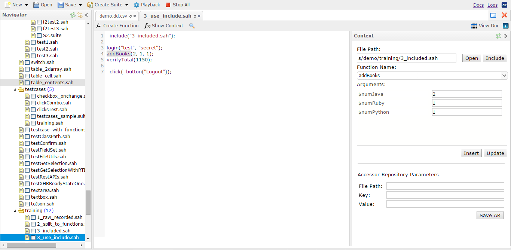
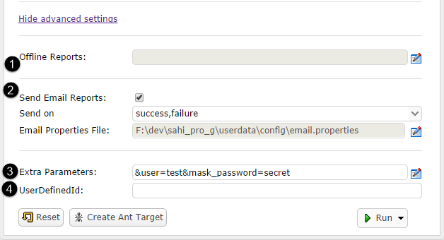

Sahi Pro - Sahi Script Editor
It allows conversion of steps into parameterized functions and extraction of constants.
Launching the Editor
Editor can be launched by clicking on the Editor link from Sahi dashboard.It can also be launched from the Sahi controller to edit the currently recorded script.
A typical editor window will look like this.

Navigator
This is the left-most panel in the editor and shows all the scripts, suites and other files in the scripts directory.

At the top of Navigator, there are three buttons. You can use them as follows:
Refresh: This button is used to refresh the directory so that newly added scripts are visible.
Link to Editor: If active, the name of script being edited will be scrolled to in the navigator menu.
Collapse: This will collapse the navigator and provide some additional space for the script editor.
The filter at the top of navigator is used to filter scripts based on the entered text. It can also be used to filter all suites and scripts.
All the scripts and suites are listed in a tree menu in the navigator.
If you click on the name of a script or suite, it will open up for editing in the script editor.
Also, if you right click on the name of script or suite, following menu is available.
Run: If playback properties are configured, it will start script execution. If not, it opens up the playback properties window. Once executed, scripts can be stopped by clicking on the "Stop All" button in the top menu.
Open: Opens the current file.
Logs: Opens the HTML logs for the current script.
Docs: Opens the script in documentation mode.
Rename: Makes the filename editable.
Delete: Deletes the file.
Script Editor
Script editor provides an interface to edit the Sahi scripts within a browser window.
The editor integrates with function creator and context editor to provide an easy interface to refactor the scripts. To edit a script, simply select the script from the navigator and start editing in the editor. Editor provides different interfaces for scripts, scenario and suites.
Context Panel
Context editor provides the ability to include any function from the scritps directory to the current script and include the file containing the function. It also allows changing the Accessor Repository parameters.Open context editor by clicking on the show context button. To include a function, search for the function in the function name. If the file containing the function is not included, the file path will be shown in red. After selecting a function, pass in the values for the arguments shown in the Arguments box. Click insert to call the function in present script. Click on Include button to include the file containing the function. The function will be added where the mouse pointer was before clicking on insert.
Click on the Open button next to File path to open the script containing function.
If the script is using an Accessor Repository, the Accessor Repository parameters can be modified by double clicking the line of code with object. This populates the Accessor Repository parameters and then these can be edited.
Click here to know more about recording with Accessor Repository.
Function Creator
To create a function out of the statements in a script, select the statements and then click on create function button.The following window will pop up. Provide a function name and click on continue.
You can also provide function names in
userdata/config/function_names.txt file and select one of these while creating functions. This file can be edited using the Configure link on Dashboard and then selecting the file name from left navigation.Search
To search within a script, click inside the editor and then use either the search icon in the menu or CTRL + F to bring up the search bar.
Scenario Editor
To edit a scenario file, just click on the file name from navigator. The CSV file is displayed in an excel like grid where it can be edited with the help of tools available to this view.Following tools are available while editing a scenario file.
1. Insert Testcase: Inserts a blank test case
2. Load Sahi library: Inserts the syntax to include a function library.
3. Function details: Shows all the details about the function that was selected before cliking the button. If the file containing the function is not included, you can click on the include button to include the file.
4. Import: Imports functions to the csv. Enter the functions that you want to import in the text area with proper arguments. Click on the import button to insert the functions in the scenario file.
Documentation tool
Sahi can be used as a documentation tool as well. While scripts can be recorded in documentation mode, documentation for already existing scripts can be generated by clicking on View Doc button. A new tab will open where the documentation can be edited and exported as HTMLPlayback
Script Editor enables playback of scripts/suites/data driven suites. Scripts can be played back on a single machine or distributed across machines.To configure playback properties, click on the Playback button in the top menu. It opens up the basic configurations required for the script execution.
-
If the user has selected some scripts/suites in the Navigator, and clicked on Playback, Sahi will automatically create a suite (selectedScripts.suite) containing the selected scripts/suites, and selectedScripts.suite will be chosen for playback.
-
If the user has selected one script/suite in the Navigator, that individual script/suite will be chosen for play back.
-
If no scripts have been selected in the Navigator, the script or suite file that is currently open (in focus) in the Editor will be chosen for playback.
Based on the playback properties set by the user, Sahi will execute the appropriate script or suite.
At the very minimum, you need to provide a start URL and browser name to execute the script. Script directory and script file fields show the file for which play button was clicked.
1. You can select the browser from the dropdown. This lists all the browsers configured on your machine. In case you are providing multiple nodes for distributed playback, this will list browsers from all nodes. One can choose more than one browser to run the script/suite in.
2. Provide a start URL for the script.
3. Click on the Play button to play the script. The default setup (Run in parallel with Threads as 5) lets you run the scripts in parallel with 5 simultaneous instances.
4. If you wish to run the scripts in the suite one after another within the same session, select "Run sequentially in single browser session".
5. If you wish to run the scripts in the suite one after another but in different browser sessions, select "Run in parallel" with Threads as 1.
Distributed Playback
Playback properties can be configured to distribute script execution across multiple machines.1. To distribute the playback across multiple machines, check the Distribute checkbox.
2. Click on the button to configure nodes for playback.
3. Provide the machine name and port number.
4. If you want to use the node for execution, check the "Use" checkbox for the node.
5. Click on Update button. This updates the node information for execution.
6. Click on Close button to close the node configuration window.
7. This allows you to add more space for additional nodes.
After configuring the nodes, you can click on play to execute the script or suite across machines.
1. By default Sahi will consider the localhost as the master node. If you want to use a different master, click the checkbox for Use Different Master.
2. Provide the machine name to be used as the host.
3. A default value of 9999 is present for port. If you are using a different port, you can update it here.
Advanced Playback Settings
While setting playback properties, following advanced settings can be configured by clicking on the "Show Advanced Settings" link.
- Offline Reports: You can configure the storage of offline logs by setting the paths for various types of reports.
-
Click on the button to bring up the Logs Info Editor.
-
Provide the location for storing the logs.
- Unless you click on Use, the settings won't be considered. Click the Use checkbox for the type of logs that you want.
- Click on update to update the Offline logs settings.
- Once updated, you can close the Logs Info Editor.
-
Click on the button to bring up the Logs Info Editor.
- Send Email Reports:
You can enable sending email reports after script run on Success, Failure or both.
-
Click on the checkbox to enable sending email reports.
- Select the trigger for sending email reports. It can be either success or failure or both.
- Sahi uses the properties file present at
userdata/config/email.propertiesto send the emails. You can click on this button to edit the email.properties file. You can change the properties file using other text editor as well.
danger The user needs to edit the email.properties and set the various properties. By default, none of the properties are set.
-
Click on the checkbox to enable sending email reports.
- Extra Parameters: You can pass extra parameters to script or suite before playback in form of key value pairs. These values can then be used within the scripts.
- Click on the button to open Extra Param Editor.
- Provide the name and value for the parameters.
- Click on Mask checkbox to hide the values of parameters from logs. This is useful for masking information like passwords.
- Update button populates the parameters and their values in Extra Parameters text box. This will be then passed on to the script.
- Click on close to close the Extra Param Editor.
- If you would like extra space for parameters, you can click the button to add an extra row.
- User Defined Id: You can provide a unique ID to be used as User Defined Id for the script//suite run.
This can be displayed in any type of log by changing
to<xsl:param name="showUserDefinedId" select="'false'" />
in the suites_list.xsl of userdata\config\reports\<xsl:param name="showUserDefinedId" select="'true'" />. can be html, xml etc
Scheduling a Test
Tests can be scheduled to be executed on a future date using the Editor. To schedule the a script, open playback properties for the script and hover on the Run button. ClickSchedule button from the dropdown.- Choose a date and time from the dropdown. Click OK to set the date.
- Provide a description(optional) for the test.
- Click on Schedule to schedule the test.